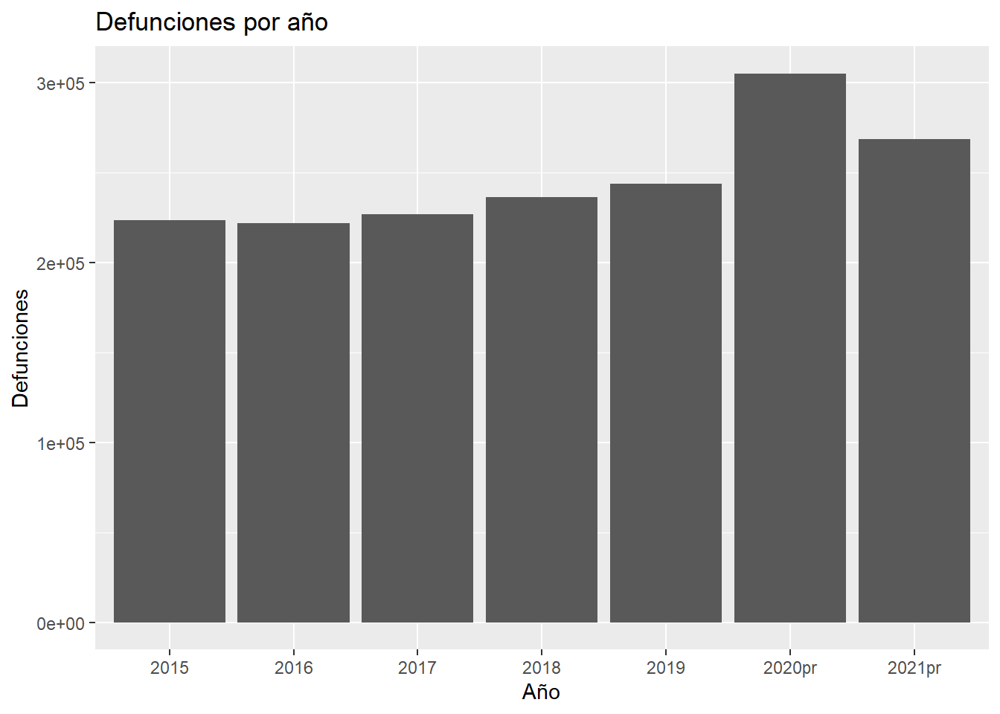
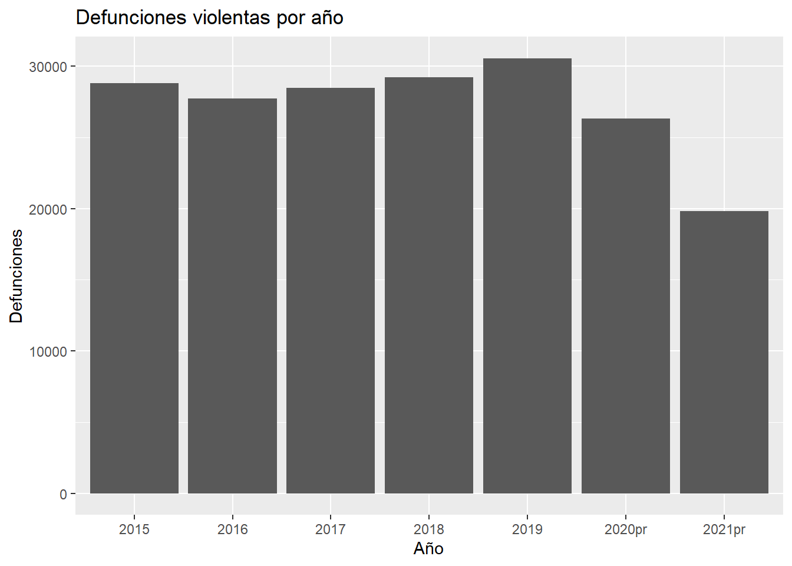
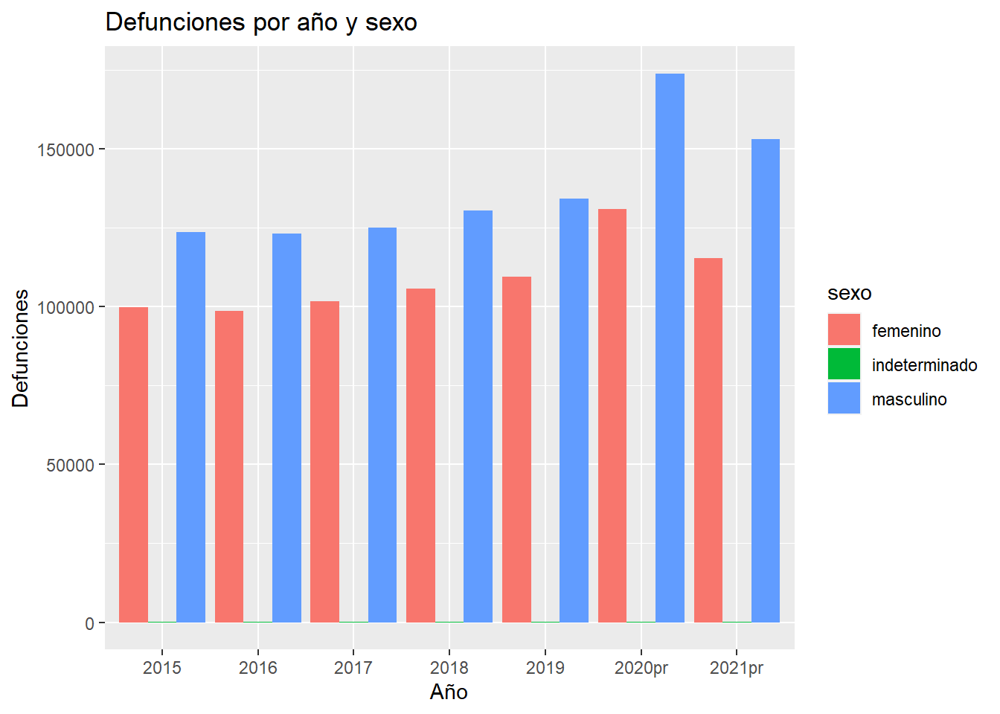
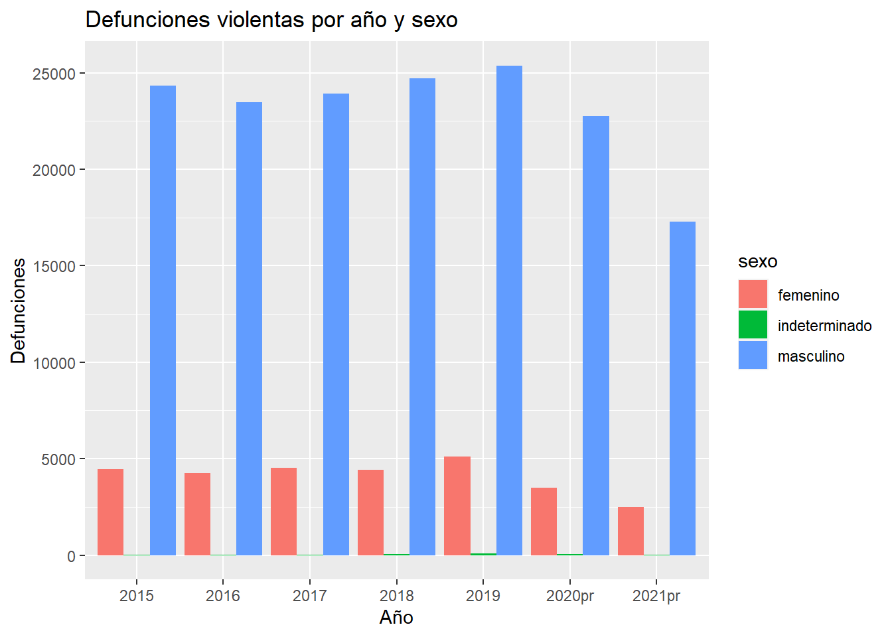
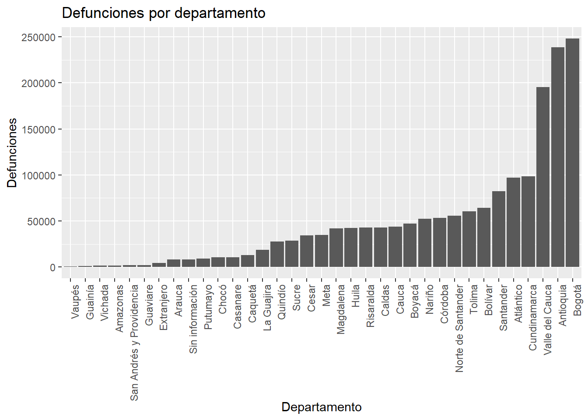
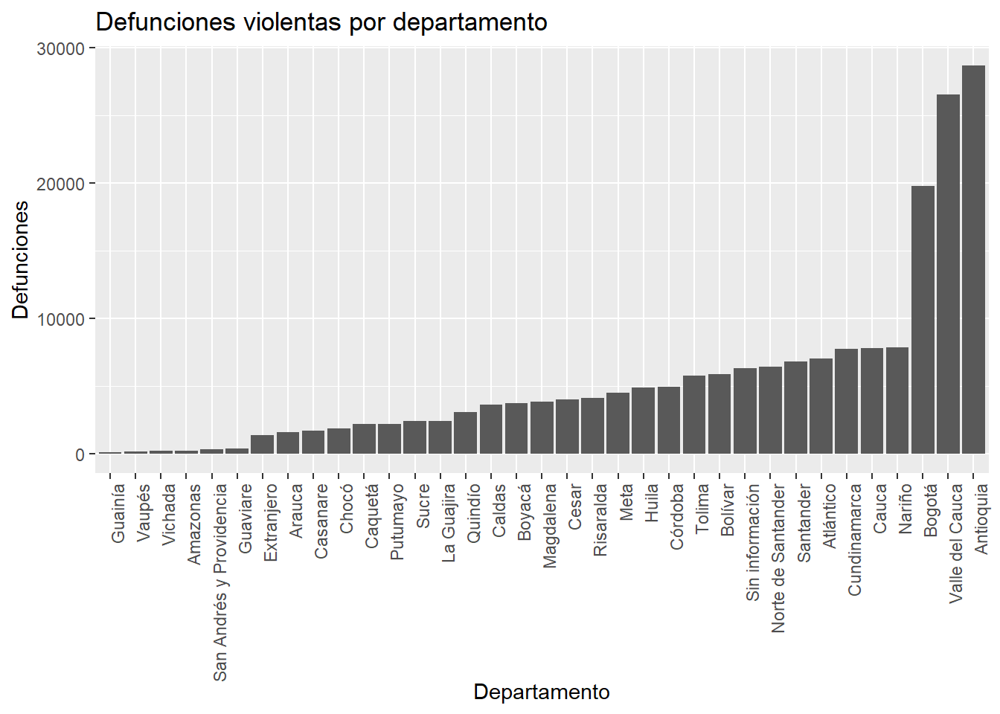

# install.packages(c("dplyr", "tidyr", "readxl", "ggplot2"))
library("dplyr")
library("tidyr")
library("readxl")
library("ggplot2")Defunciones en Colombia - Documentación
Exploración inicial
Al observar el conjunto de datos, noté que este contiene información sobre las defunciones no fetales registradas en el país (Colombia) desde el año 2015 hasta un registro preliminar del año 2021.
Los datos se encuentran contenidos en un archivo de Excel (.xlsx), en el cual se encuentran 2 hojas:
La primera hoja contiene las fechas de inicio y fin de cada una de las semanas (según el estándar ISO 8601) del intervalo de tiempo mencionado anteriormente.
La segunda hoja contiene la cantidad de defunciones no fetales registradas en el país (Colombia), agrupadas por probable causa de muerte y sexo, e ingresadas según el año, departamento y semana de defunción.
Carga de los datos
Previo a la portación de los datos, se deben cargar (e instalar en caso de que no se hayan descargado) los paquetes necesarios para el ordenamiento y limpieza de los datos, además, dado que también se realizará una exploración post-limpieza, se cargarán los paquetes necesarios para la visualización de los datos.
Una vez cargados los paquetes, procedí a importar los datos.
raw_weeks <- read_xlsx(
"data/defunciones.xlsx",
sheet = "Semanas"
)
raw_defunctions <- read_xlsx(
"data/defunciones.xlsx",
sheet = "Tabla seguimiento mortalidad"
)Veamos ahora una vista previa de los datos.
raw_weeks %>%
head(10) %>%
knitr::kable()| Estadísticas Vitales | …2 | …3 | …4 | …5 | …6 | …7 | …8 | …9 | …10 | …11 | …12 | …13 | …14 | …15 |
|---|---|---|---|---|---|---|---|---|---|---|---|---|---|---|
| NA | NA | NA | NA | NA | NA | NA | NA | NA | NA | NA | NA | NA | NA | NA |
| Semanas según estándar ISO 8601 | NA | NA | NA | NA | NA | NA | NA | NA | NA | NA | NA | NA | NA | NA |
| Años 2015 - 2021 | NA | NA | NA | NA | NA | NA | NA | NA | NA | NA | NA | NA | NA | NA |
| Semana | 2015 | NA | 2016 | NA | 2017 | NA | 2018 | NA | 2019 | NA | 2020 | NA | 2021 | NA |
| NA | Inicia | Fin | Inicia | Fin | Inicia | Fin | Inicia | Fin | Inicia | Fin | Inicia | Fin | Inicia | Fin |
| semana 01 | 42002 | 42008 | 42373 | 42379 | 42737 | 42743 | 43101 | 43107 | 43465 | 43471 | 43829 | 43835 | 44200 | 44206 |
| Semana 02 | 42009 | 42015 | 42380 | 42386 | 42744 | 42750 | 43108 | 43114 | 43472 | 43478 | 43836 | 43842 | 44207 | 44213 |
| Semana 03 | 42016 | 42022 | 42387 | 42393 | 42751 | 42757 | 43115 | 43121 | 43479 | 43485 | 43843 | 43849 | 44214 | 44220 |
| Semana 04 | 42023 | 42029 | 42394 | 42400 | 42758 | 42764 | 43122 | 43128 | 43486 | 43492 | 43850 | 43856 | 44221 | 44227 |
| Semana 05 | 42030 | 42036 | 42401 | 42407 | 42765 | 42771 | 43129 | 43135 | 43493 | 43499 | 43857 | 43863 | 44228 | 44234 |
raw_defunctions %>%
head(10) %>%
knitr::kable()| Estadísticas Vitales | …2 | …3 | …4 | …5 | …6 | …7 | …8 | …9 | …10 | …11 | …12 | …13 | …14 | …15 |
|---|---|---|---|---|---|---|---|---|---|---|---|---|---|---|
| NA | NA | NA | NA | NA | NA | NA | NA | NA | NA | NA | NA | NA | NA | NA |
| Defunciones no fetales por probable manera de muerte y sexo, según año, departamento de residencia y semana de defunción | NA | NA | NA | NA | NA | NA | NA | NA | NA | NA | NA | NA | NA | NA |
| Años 2015 - 2021pr (Sem 1 - 35) | NA | NA | NA | NA | NA | NA | NA | NA | NA | NA | NA | NA | NA | NA |
| NA | NA | NA | Natural | NA | NA | NA | Violenta | NA | NA | NA | En estudio | NA | NA | NA |
| NA | NA | NA | Total | Masculino | Femenino | Indeterminado | Total | Masculino | Femenino | Indeterminado | Total | Masculino | Femenino | Indeterminado |
| 2015 | Total | NA | 193256 | 98341 | 94915 | 0 | 28803 | 24331 | 4446 | 26 | 1435 | 979 | 440 | 16 |
| NA | Sin información | Total | 205 | 139 | 66 | 0 | 446 | 399 | 39 | 8 | 67 | 46 | 9 | 12 |
| NA | NA | Semana 1 | 3 | 2 | 1 | 0 | 10 | 10 | 0 | 0 | 0 | 0 | 0 | 0 |
| NA | NA | Semana 2 | 2 | 2 | 0 | 0 | 6 | 6 | 0 | 0 | 3 | 3 | 0 | 0 |
| NA | NA | Semana 3 | 2 | 2 | 0 | 0 | 2 | 2 | 0 | 0 | 2 | 2 | 0 | 0 |
Identificación de problemas
A partir de la vista preliminar de los datos, noté, en primera instancia, que se incluye (en los data frames con los datos importados) contenido de celdas (de la hoja de cálculo) con información externa a los datos, como lo son la descripción, notas, fuentes de los datos, etc.
Así que para evitar que esta información se incluya en los data frames, y así poder tener una mejor percepción de los datos (y los demás problemas o “suciedad” de estos), procedí a delimitar las celdas que contienen únicamente datos (sin los nombres de sus columnas -esto se explicará más adelante-), para de estar forma agregarlos como parámetros de la función read_xlsx().
Además, dado que no se especifica el tipo de dato de cada columna, se le permite al paquete readxl inferir estos, lo cual en particular causa problemas en la columna 1 del data frame raw_defunctions (Año), pues al permitirle al paquete inferir el tipo de dato, este lo asigna como numérico, causando que los valores “2020pr” y “2021pr” no se importen correctamente. En consecuencia, especificaré por el momento el tipo de dato de esta columna como texto, para así evitar este problema.
raw_weeks <- read_xlsx(
"data/defunciones.xlsx",
sheet = "Semanas",
range = "A12:O64",
col_names = FALSE
)
raw_defunctions <- read_xlsx(
"data/defunciones.xlsx",
sheet = "Tabla seguimiento mortalidad",
range = "A13:O12463",
col_names = FALSE,
col_types = c(
"text",
rep("guess", 14)
)
)Veamos nuevamente una vista previa de los datos.
raw_weeks %>%
head(10) %>%
knitr::kable()| …1 | …2 | …3 | …4 | …5 | …6 | …7 | …8 | …9 | …10 | …11 | …12 | …13 | …14 | …15 |
|---|---|---|---|---|---|---|---|---|---|---|---|---|---|---|
| semana 01 | 2014-12-29 | 2015-01-04 | 2016-01-04 | 2016-01-10 | 2017-01-02 | 2017-01-08 | 2018-01-01 | 2018-01-07 | 2018-12-31 | 2019-01-06 | 2019-12-30 | 2020-01-05 | 2021-01-04 | 2021-01-10 |
| Semana 02 | 2015-01-05 | 2015-01-11 | 2016-01-11 | 2016-01-17 | 2017-01-09 | 2017-01-15 | 2018-01-08 | 2018-01-14 | 2019-01-07 | 2019-01-13 | 2020-01-06 | 2020-01-12 | 2021-01-11 | 2021-01-17 |
| Semana 03 | 2015-01-12 | 2015-01-18 | 2016-01-18 | 2016-01-24 | 2017-01-16 | 2017-01-22 | 2018-01-15 | 2018-01-21 | 2019-01-14 | 2019-01-20 | 2020-01-13 | 2020-01-19 | 2021-01-18 | 2021-01-24 |
| Semana 04 | 2015-01-19 | 2015-01-25 | 2016-01-25 | 2016-01-31 | 2017-01-23 | 2017-01-29 | 2018-01-22 | 2018-01-28 | 2019-01-21 | 2019-01-27 | 2020-01-20 | 2020-01-26 | 2021-01-25 | 2021-01-31 |
| Semana 05 | 2015-01-26 | 2015-02-01 | 2016-02-01 | 2016-02-07 | 2017-01-30 | 2017-02-05 | 2018-01-29 | 2018-02-04 | 2019-01-28 | 2019-02-03 | 2020-01-27 | 2020-02-02 | 2021-02-01 | 2021-02-07 |
| Semana 06 | 2015-02-02 | 2015-02-08 | 2016-02-08 | 2016-02-14 | 2017-02-06 | 2017-02-12 | 2018-02-05 | 2018-02-11 | 2019-02-04 | 2019-02-10 | 2020-02-03 | 2020-02-09 | 2021-02-08 | 2021-02-14 |
| Semana 07 | 2015-02-09 | 2015-02-15 | 2016-02-15 | 2016-02-21 | 2017-02-13 | 2017-02-19 | 2018-02-12 | 2018-02-18 | 2019-02-11 | 2019-02-17 | 2020-02-10 | 2020-02-16 | 2021-02-15 | 2021-02-21 |
| Semana 08 | 2015-02-16 | 2015-02-22 | 2016-02-22 | 2016-02-28 | 2017-02-20 | 2017-02-26 | 2018-02-19 | 2018-02-25 | 2019-02-18 | 2019-02-24 | 2020-02-17 | 2020-02-23 | 2021-02-22 | 2021-02-28 |
| Semana 09 | 2015-02-23 | 2015-03-01 | 2016-02-29 | 2016-03-06 | 2017-02-27 | 2017-03-05 | 2018-02-26 | 2018-03-04 | 2019-02-25 | 2019-03-03 | 2020-02-24 | 2020-03-01 | 2021-03-01 | 2021-03-07 |
| Semana 10 | 2015-03-02 | 2015-03-08 | 2016-03-07 | 2016-03-13 | 2017-03-06 | 2017-03-12 | 2018-03-05 | 2018-03-11 | 2019-03-04 | 2019-03-10 | 2020-03-02 | 2020-03-08 | 2021-03-08 | 2021-03-14 |
raw_defunctions %>%
head(10) %>%
knitr::kable()| …1 | …2 | …3 | …4 | …5 | …6 | …7 | …8 | …9 | …10 | …11 | …12 | …13 | …14 | …15 |
|---|---|---|---|---|---|---|---|---|---|---|---|---|---|---|
| 2015 | Total | NA | 193256 | 98341 | 94915 | 0 | 28803 | 24331 | 4446 | 26 | 1435 | 979 | 440 | 16 |
| NA | Sin información | Total | 205 | 139 | 66 | 0 | 446 | 399 | 39 | 8 | 67 | 46 | 9 | 12 |
| NA | NA | Semana 1 | 3 | 2 | 1 | 0 | 10 | 10 | 0 | 0 | 0 | 0 | 0 | 0 |
| NA | NA | Semana 2 | 2 | 2 | 0 | 0 | 6 | 6 | 0 | 0 | 3 | 3 | 0 | 0 |
| NA | NA | Semana 3 | 2 | 2 | 0 | 0 | 2 | 2 | 0 | 0 | 2 | 2 | 0 | 0 |
| NA | NA | Semana 4 | 1 | 1 | 0 | 0 | 4 | 4 | 0 | 0 | 1 | 0 | 0 | 1 |
| NA | NA | Semana 5 | 1 | 1 | 0 | 0 | 4 | 4 | 0 | 0 | 1 | 1 | 0 | 0 |
| NA | NA | Semana 6 | 1 | 1 | 0 | 0 | 6 | 6 | 0 | 0 | 1 | 1 | 0 | 0 |
| NA | NA | Semana 7 | 1 | 1 | 0 | 0 | 7 | 6 | 1 | 0 | 1 | 1 | 0 | 0 |
| NA | NA | Semana 8 | 0 | 0 | 0 | 0 | 7 | 7 | 0 | 0 | 0 | 0 | 0 | 0 |
Ahora que es posible tener una mejor percepción de los datos, identifiqué los siguientes problemas, separados por data frame:
- raw_weeks: - El formato de los datos en la columna 1 (semana) no es del todo adecuado, pues el hecho de que se incluya en cada entrada el texto “semana” lo hace redundante, por lo que sería mejor omitirlo. Como ejemplo sencillo, se puede ver que el valor de la primera fila de la columna 1 es “semana 01”, y el de la segunda fila es “Semana 02”, causando una inconsistencia en el formato de los datos.
- Si bien en algunas columnas se encuentran datos faltantes, estos no representan precisamente un problema, ya que se puede inferir que estos datos faltantes corresponden a los años en los que, por las fechas de inicio y fin de las semanas, se registró un número de semanas menor.- raw_defunctions: - El tipo de los valores en las columnas 1 y 2 (año, departamento) se encuentran en formato de caracter. Y dado que estos toman un número finito de valores y no es necesario realizar operaciones numéricas entre estos, considero que sería más adecuado que fueran de tipo factor.
- En la columna 3 (semana), al igual que para el data frame anterior, el formato y tipo de los datos es de caracter, cuando sería más adecuado que fueran de tipo factor, dado que de esta forma se podría realizar un mejor análisis (al relacionar los valores de esta columna con los de la columna 1 del data frame anterior, y así poder identificar por ejemplo las fechas en cierto año, en las que se registró un mayor número de defunciones por causa natural o violenta).
- En las columnas 1 (año) y 2 (departamento), se encuentran valores faltantes; sin embargo, al observar la forma en que se presentan los datos, se puede inferir que estos datos faltantes corresponden al año y departamento del valor no nulo inmediatamente anterior a estos.
- Por cada año y departamento se incluye una fila de totales, y dado que estas filas no representan precisamente observaciones, sería mejor omitirlas. Similarmente, por cada causa probable de muerte se incluye una columna de totales, por lo que también sería mejor omitirlas.Ordenamiento y limpieza de los datos
Al momento de delimitar las celdas que contienen únicamente datos, omití los nombres de las columnas. Esto porque, por la forma en la que están presentados los datos en la hoja de cálculo, al importar los datos, no se logra que los nombres de las columnas se asignen correctamente. Así que procederé a asignar nombres descriptivos para cada una de las columnas manualmente.
colnames(raw_weeks) <- c(
"semana",
"2015-inicio", "2015-fin",
"2016-inicio", "2016-fin",
"2017-inicio", "2017-fin",
"2018-inicio", "2018-fin",
"2019-inicio", "2019-fin",
"2020-inicio", "2020-fin",
"2021-inicio", "2021-fin"
)
colnames(raw_defunctions) <- c(
"año", "departamento", "semana",
"natural-total", "natural-masculino",
"natural-femenino", "natural-indeterminado",
"violenta-total", "violenta-masculino",
"violenta-femenino", "violenta-indeterminado",
"en estudio-total", "en estudio-masculino",
"en estudio-femenino", "en estudio-indeterminado"
)Empezaré por rellenar los valores faltantes en las columnas 1 (año) y 2 (departamento) del data frame raw_defunctions. Para esto, utilizaré la función fill() del paquete tidyr.
defunctions <- raw_defunctions %>%
fill(año, departamento)Como mencioné anteriormente, en ambos data frames, sería conveniente que los valores de la columna “semana” fueran de tipo factor, así que empezaré por convertir estos valores a dicho formato, al igual que para las columnas “año” y “departamento” del data frame raw_defunctions, con ayuda de la función mutate() del paquete dplyr y la función *as.factor().
Además, omitiré el texto “semana” de los valores de la columna “semana” de ambos data frames. En este último paso, debí convertir los valores previamente a números, pues en caso de haberlos convertido directamente a factores, los niveles del 1 al 9 no hubieran coincidido entre ambos data frames.
Para esto, utilicé la función gsub() para reemplazar el texto “semana” por una cadena vacía, y posteriormente convertí los valores a números enteros con la función as.integer().
weeks <- raw_weeks %>%
mutate(
semana = as.factor(
as.integer(
gsub(
"semana ",
"",
semana,
ignore.case = TRUE
)
)
)
)
defunctions <- defunctions %>%
mutate(
año = as.factor(año),
departamento = as.factor(departamento),
semana = as.factor(
as.integer(
gsub("semana ",
"",
semana,
ignore.case = TRUE
)
)
)
)Ahora seguiré con la eliminación de las filas y columnas de totales del data frame raw_defunctions. Para esto, utilizaré las funciones filter() y select() del paquete dplyr. La primera para filtrar las filas que contengan valores nulos en la columna “semana” (justamente las filas de totales), y la segunda para eliminar las columnas de totales.
defunctions <- defunctions %>%
filter(!is.na(semana)) %>%
select(-c(4, 8, 12))En este momento ya se tiene un data frame con los datos relativamente limpios, pues ya se han reemplazado los valores nulos y eliminado las filas y columnas de totales, y se han convertido los valores de las columnas “año”, “departamento” y “semana” a formato de factor. Con relativamente limpios, me refiero a que para hacer una limpieza más profunda, sería necesario realizar una investigación avanzada del contexto de los datos (ejemplo: por departamento), y con base en este, decidir qué hacer con los “outliers”, pues al hacer el estudio de datos atípicos con el conjunto de datos completo es clara la disparidad entre los datos entre las diferentes regiones del país. Sin embargo, dado que el objetivo de este proyecto es aprender a utilizar las herramientas de R para la limpieza de datos, me limitaré a realizar una limpieza básica.
Ahora, para terminar de preparar los datos para un futuro análisis, es necesario organizarlos. Al revisar la estructura de ambos data frames, se puede observar que estos se encuentran en un formato ancho (por ejemplo, en el caso de defunctions, cada causa probable de muerte se encuentra tiene una columna diferente por cada sexo), cuando sería más conveniente que estuvieran en un formato largo por las siguientes razones:
En el data frame weeks, las columnas “2015-inicio”, “2015-fin”, “2016-inicio”, “2016-fin”, “2017-inicio”, “2017-fin”, “2018-inicio”, “2018-fin”, “2019-inicio”, “2019-fin”, “2020-inicio”, “2020-fin”, “2021-inicio” y “2021-fin” representan valores de dos variables: la fecha de inicio y fin de cada semana. Por lo tanto, sería más conveniente que estos valores estuvieran en dos columnas (fecha de inicio y fecha de fin), para de esta forma facilitar una posible relación entre los datos de este data frame y los del data frame defunctions.
En el data frame defunctions, las columnas “natural-masculino”, “natural-femenino”, “natural-indeterminado”, “violenta-masculino”, “violenta-femenino”, “violenta-indeterminado”, “en estudio-masculino”, “en estudio-femenino” y “en estudio-indeterminado” representan valores de tres variables: el número de defunciones por causa de muerte (natural, violenta e indeterminado). Por lo tanto, sería más conveniente que estos valores estuvieran en tres columnas que representen estas tres variables.
Para lograr esto, utilizaré la función pivot_longer() del paquete tidyr, pero antes, unificaré los valores de las columnas que comparten la misma variable en una sola columna usando la función unite(), para de esta forma facilitar la conversión de formato ancho a largo. Y seguido al “alargamiento” de los data frames, deshacer esta unificación con la función separate(). Para finalizar, me aseguraré de que los valores modificados estén en el formato correcto y ordenaré los data frames de forma ascendente (en el caso de weeks, por año y semana, y en el caso de defunctions, por año, departamento y semana).
weeks <- weeks %>%
unite("2015", c("2015-inicio", "2015-fin"), sep = "_") %>%
unite("2016", c("2016-inicio", "2016-fin"), sep = "_") %>%
unite("2017", c("2017-inicio", "2017-fin"), sep = "_") %>%
unite("2018", c("2018-inicio", "2018-fin"), sep = "_") %>%
unite("2019", c("2019-inicio", "2019-fin"), sep = "_") %>%
unite("2020", c("2020-inicio", "2020-fin"), sep = "_") %>%
unite("2021", c("2021-inicio", "2021-fin"), sep = "_")
defunctions <- defunctions %>%
unite(
"masculino",
c(
"natural-masculino",
"violenta-masculino",
"en estudio-masculino"
),
sep = "_"
) %>%
unite(
"femenino",
c(
"natural-femenino",
"violenta-femenino",
"en estudio-femenino"
),
sep = "_"
) %>%
unite(
"indeterminado",
c(
"natural-indeterminado",
"violenta-indeterminado",
"en estudio-indeterminado"
),
sep = "_"
)weeks <- weeks %>%
# Alargar el data frame
pivot_longer(
cols = c(
"2015",
"2016", "2017",
"2018", "2019",
"2020", "2021"
),
names_to = "año",
values_to = "inicio-fin"
) %>%
# Separar la columna con las fechas en dos columnas
separate(
"inicio-fin",
into = c("inicio", "fin"),
sep = "_"
) %>%
# Convertir las columnas a los tipos de datos deseados
mutate(
año = as.factor(año),
inicio = as.Date(inicio, format = "%Y-%m-%d"),
fin = as.Date(fin, format = "%Y-%m-%d")
) %>%
# Reorganizar las columnas
select(2, 1, 3, 4) %>%
# Ordenar el data frame por año y semana
arrange(año, semana)defunctions <- defunctions %>%
# Alargar el data frame
pivot_longer(
cols = c(
"masculino",
"femenino",
"indeterminado"
),
names_to = "sexo",
values_to = "causa"
) %>%
# Separar la columna con las causas de muerte en tres columnas
separate(
"causa",
into = c(
"natural",
"violenta",
"en estudio"
),
sep = "_"
) %>%
# Convertir las columnas a los tipos de datos deseados
mutate(
sexo = as.factor(sexo),
natural = as.numeric(natural),
violenta = as.numeric(violenta),
`en estudio` = as.numeric(`en estudio`)
) %>%
# Reorganizar las columnas
select(1, 3, 2, 4, 5, 6, 7) %>%
# Ordenar el data frame por año, semana y departamento
arrange(año, semana, departamento)Veamos los data frames resultantes después de la limpieza y ordenamiento de datos realizados hasta este punto.
weeks %>%
head(10) %>%
knitr::kable()| año | semana | inicio | fin |
|---|---|---|---|
| 2015 | 1 | 2014-12-29 | 2015-01-04 |
| 2015 | 2 | 2015-01-05 | 2015-01-11 |
| 2015 | 3 | 2015-01-12 | 2015-01-18 |
| 2015 | 4 | 2015-01-19 | 2015-01-25 |
| 2015 | 5 | 2015-01-26 | 2015-02-01 |
| 2015 | 6 | 2015-02-02 | 2015-02-08 |
| 2015 | 7 | 2015-02-09 | 2015-02-15 |
| 2015 | 8 | 2015-02-16 | 2015-02-22 |
| 2015 | 9 | 2015-02-23 | 2015-03-01 |
| 2015 | 10 | 2015-03-02 | 2015-03-08 |
defunctions %>%
head(10) %>%
knitr::kable()| año | semana | departamento | sexo | natural | violenta | en estudio |
|---|---|---|---|---|---|---|
| 2015 | 1 | Amazonas | masculino | 4 | 2 | 0 |
| 2015 | 1 | Amazonas | femenino | 2 | 0 | 0 |
| 2015 | 1 | Amazonas | indeterminado | 0 | 0 | 0 |
| 2015 | 1 | Antioquia | masculino | 294 | 89 | 4 |
| 2015 | 1 | Antioquia | femenino | 321 | 16 | 2 |
| 2015 | 1 | Antioquia | indeterminado | 0 | 0 | 0 |
| 2015 | 1 | Arauca | masculino | 7 | 6 | 0 |
| 2015 | 1 | Arauca | femenino | 8 | 1 | 0 |
| 2015 | 1 | Arauca | indeterminado | 0 | 0 | 0 |
| 2015 | 1 | Atlántico | masculino | 107 | 22 | 0 |
Así conseguimos entonces dos data frames con los datos limpios y ordenados, pues estos siguen los principios del formato de tidy data:
- Cada variable forma una columna.
- Cada observación forma una fila.
Análisis exploratorio post-limpiezas
Ahora que los datos están limpios y ordenados, realizaré una serie de análisis básicos de los mismos. Para esto, utilizaré algunas funciones de los paquetes dplyr y ggplot2.
Defunciones por año
defunctions %>%
group_by(año) %>%
summarise(
total = sum(natural + violenta + `en estudio`)
) %>%
ggplot(aes(x = año, y = total)) +
geom_col() +
labs(
title = "Defunciones por año",
x = "Año",
y = "Defunciones"
)
A partir de la gráfica anterior, se puede observar que el número de defunciones registradas en el país ha ido en aumento desde el año 2015 hasta el año 2020 (donde se registraron más de 300.000 defunciones), y que en el año 2021 se registró un número de defunciones menor al del año anterior. Sin embargo, es importante tener en cuenta que los datos del año 2021 son preliminares, por lo que es posible que este número haya aumentado.
Defunciones violentas por año
defunctions %>%
group_by(año) %>%
summarise(
total = sum(violenta)
) %>%
ggplot(aes(x = año, y = total)) +
geom_col() +
labs(
title = "Defunciones violentas por año",
x = "Año",
y = "Defunciones"
)
A partir de la gráfica anterior, se puede observar que el número de defunciones violentas registradas en el país, a diferencia del número de defunciones totales, fue en ligero aumento desde 2016 hasta 2019, año a partir del cual se registró una disminución en el número de defunciones violentas, y estudiando un poco el contexto de los datos, se puede entrever que esta disminución se debe a la pandemia del COVID-19.
Defunciones por año y sexo
defunctions %>%
group_by(año, sexo) %>%
summarise(
total = sum(natural + violenta + `en estudio`)
) %>%
ggplot(aes(x = año, y = total, fill = sexo)) +
geom_col(position = "dodge") +
labs(
title = "Defunciones por año y sexo",
x = "Año",
y = "Defunciones"
)`summarise()` has grouped output by 'año'. You can override using the `.groups`
argument.
A partir de la gráfica anterior, se puede observar que históricamente se registran más defunciones en hombres que en mujeres.
Defunciones violentas por año y sexo
defunctions %>%
group_by(año, sexo) %>%
summarise(
total = sum(violenta)
) %>%
ggplot(aes(x = año, y = total, fill = sexo)) +
geom_col(position = "dodge") +
labs(
title = "Defunciones violentas por año y sexo",
x = "Año",
y = "Defunciones"
)`summarise()` has grouped output by 'año'. You can override using the `.groups`
argument.
A partir de la gráfica anterior, se puede observar que históricamente se registran más del triple (en algunos años hasta el cuádruple) de defunciones violentas en hombres que en mujeres.
Defunciones por departamento
defunctions %>%
group_by(departamento) %>%
summarise(
total = sum(natural + violenta + `en estudio`)
) %>%
ggplot(aes(x = reorder(departamento, total), y = total)) +
geom_col() +
labs(
title = "Defunciones por departamento",
x = "Departamento",
y = "Defunciones"
) +
theme(
axis.text.x = element_text(angle = 90, hjust = 1)
)
A partir de la gráfica anterior, se puede observar que durante el periodo de tiempo estudiado, el número de defunciones registradas en el país es mayor en la capital (Bogotá D.C.), seguida de los departamentos de Antioquia, Valle del Cauca y Cundinamarca.
Defunciones violentas por departamento
defunctions %>%
group_by(departamento) %>%
summarise(
total = sum(violenta)
) %>%
ggplot(aes(x = reorder(departamento, total), y = total)) +
geom_col() +
labs(
title = "Defunciones violentas por departamento",
x = "Departamento",
y = "Defunciones"
) +
theme(
axis.text.x = element_text(angle = 90, hjust = 1)
)
A partir de la gráfica anterior, se puede observar que durante el periodo de tiempo estudiado, el número de defunciones violentas registradas en el país es mayor en el departamento de Antioquia, seguido de los departamentos de Valle del Cauca y la capital (Bogotá D.C.).
Reflexión y discusión
Durante el proceso de limpieza de los datos realmente no me surgieron demasiados inconvenientes, pues la base de datos estaba relativamente bien estructurada, y quizás los desafíos que se me presentaron fueron más que todo por mi falta de experiencia en el uso de R, y no tanto por la complejidad de los datos.
Sin embargo, al momento de realizar el análisis exploratorio de los datos, me surgió la duda de qué información de los datos estudiar y cómo presentarla, pues al ser un conjunto de datos relativamente grande, no es posible presentar toda la información en una sola gráfica, y tampoco es posible estudiar toda la información en un solo análisis.